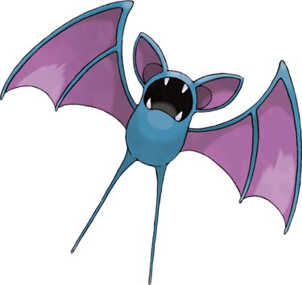

Nosferapti est une petite chauve-souris bleu foncé. La membrane de ses ailes est violette, tout comme le creux de ses grandes oreilles. Sa mâchoire possède quatre crocs apparents. Ses membres inférieurs ne sont pas munis de pieds et son visage ne possède pas d'yeux, puisque ce Pokémon utilise des ultrasons pour se déplacer dans l'obscurité des grottes où il vit principalement